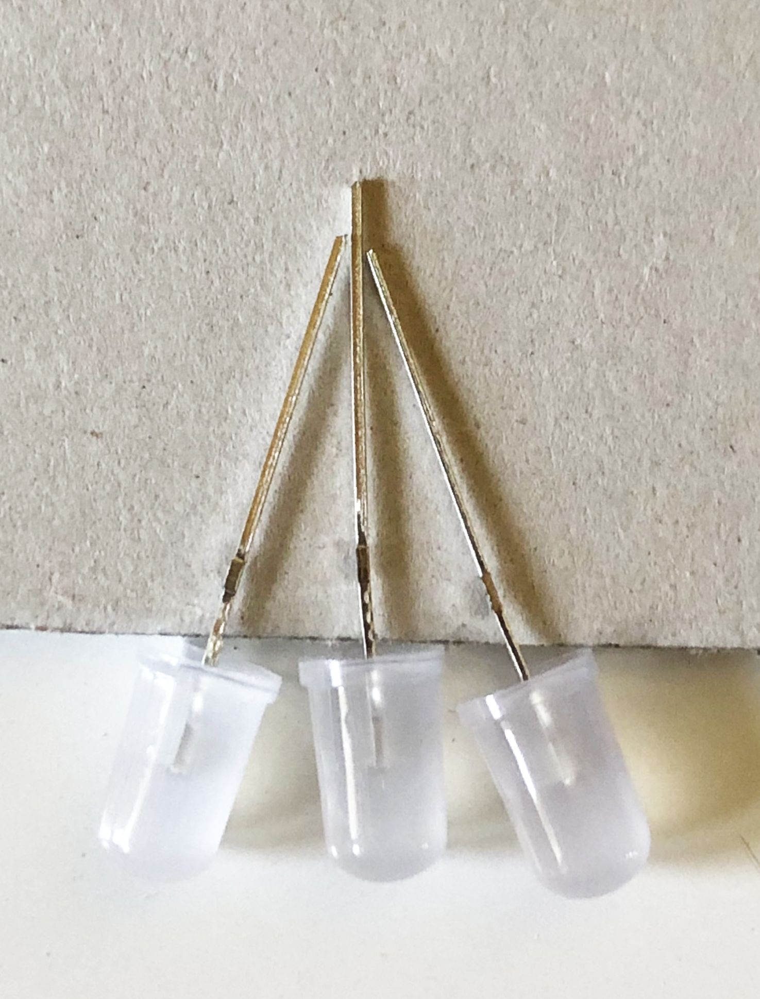
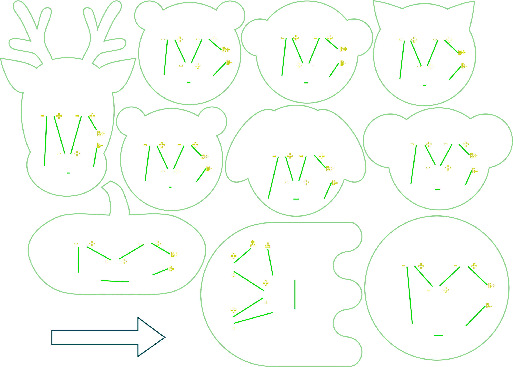

Das hier ist die für die Druckvorlage Tütchen. Druckvorlage
Wir haben uns von hier inspirieren lassen: NibblePegs
Das hier ist die für die Druckvorlage Tütchen. Druckvorlage

| Anzahl | Typ | Bezugsquelle | Bestell-Nr |
|---|---|---|---|
| 3 | RGB Farbwechsel-LEDs | Blinkyparts | |
| 1 | Ohrring/Anstecknadel | etsy | |
| 1 | Knopfbatterie | Reichelt | CR2025 |
drei LEDs in gleicher Ausrichtung auf den Karton stecken sodass sich die Enden der drei LEDs berühren

nach Bedarf mit Tesa fixieren
lange Beinchen zusammen löten

kurze Beinchen zusammen löten
auf der Seite mit den längeren Beinchen den Ohrhaken/die Anstecknadel auflöten

hierbei Ohrhaken/Anstecknadeln eine Weile erwärmen
etwas Lötzinn auf die Ohrhaken/Anstecknadeln geben
an die LEDs halten und zusammen löten


dabei den Kindern etwas helfen und die Einzelteile etwas fixieren (evtl mit den Zangen)
Test: Knopfbatterie einschieben


Die Inspiration hierfür war dieser Workshop: Das Labor

Die Farbe der Bändchen zeigt, welche Farbe die LEDs in den jeweiligen Tüten haben. Das hier ist die für die Druckvorlage Tütchen. Druckvorlage

| Anzahl | Typ | Bezugsquelle | Bestell-Nr |
|---|---|---|---|
| 2 | LEDs (rot/grün/gelb) | Reichelt | |
| 1 | LED (grün/gelb/rot) | Reichelt | |
| 2 | Widerstände | Reichelt | |
| 1 | Batterie-Clip | Reichelt | |
| 1 | Block-Batterie | Reichelt |

| Anzahl | Typ | Bezugsquelle | Bestell-Nr |
|---|---|---|---|
| 1 | Smiley-Gesicht | selbst hergestellt |



Widerstände in die Löcher am Mund einstecken


die Drähte auf de rRückseite umbiegen

Widerstände anlöten, da diese gut auf dem Tisch abgelegt werden können und die Richtung dabei egal ist

LEDs in die Augen und Nasenlöcher stecken, dabei die Polung beachten
die Beinchen der LEDs umbiegen, sodass sich diejenigen berühren, die zusammen gelötet werden sollen (als Hilfe sind auf der Rückseite Verbindungslinien angelasert)
LEDs anlöten
Batterie-Kabel anlöten

kurz testen, ob alles leuchtet


falls nicht
überstehende Drähte abknipsen
OWG-Loetworkshop is licensed under CC BY-NC 4.0